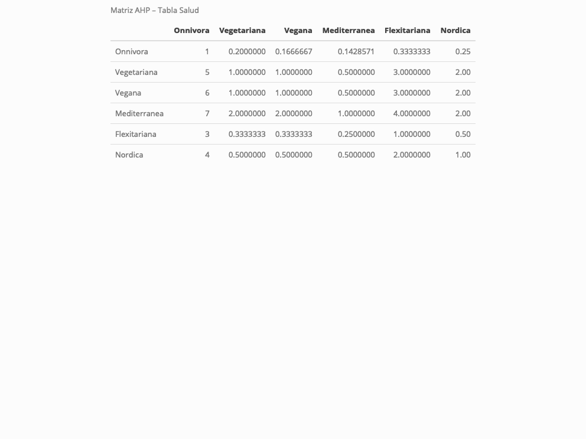
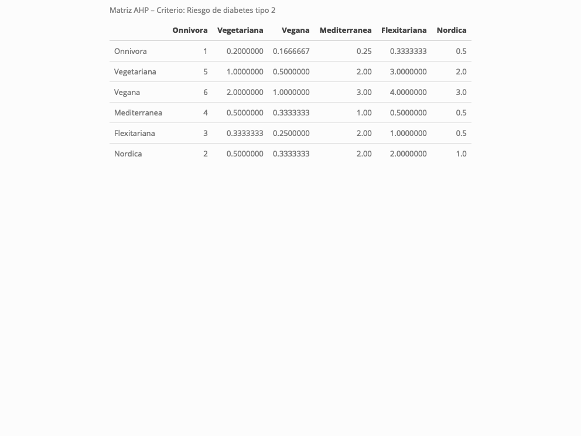
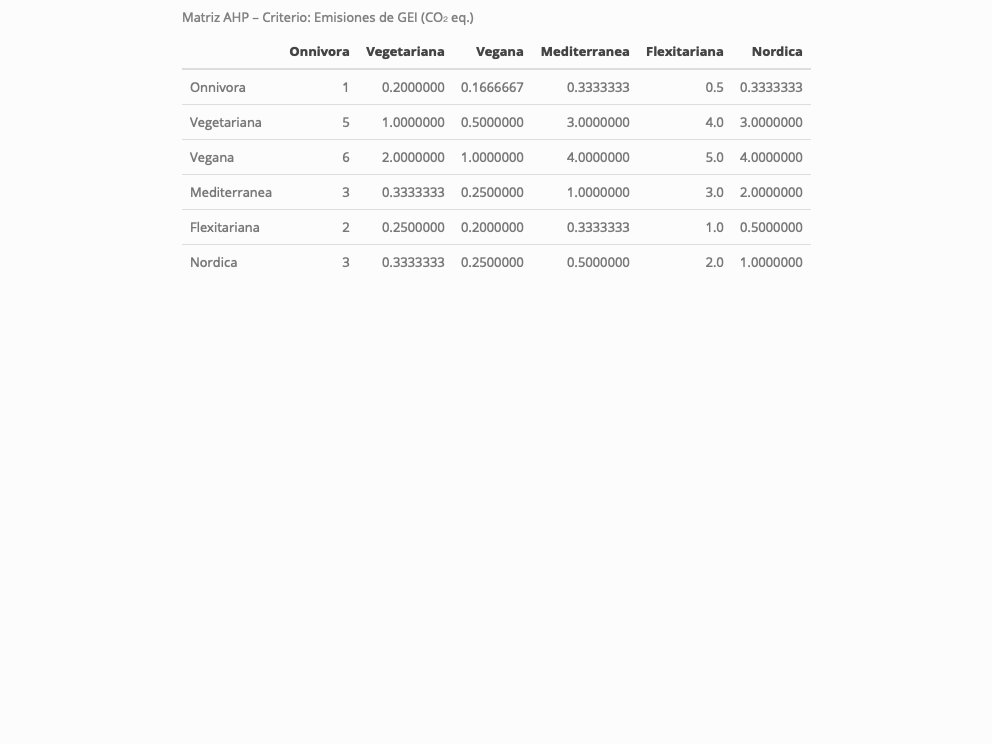
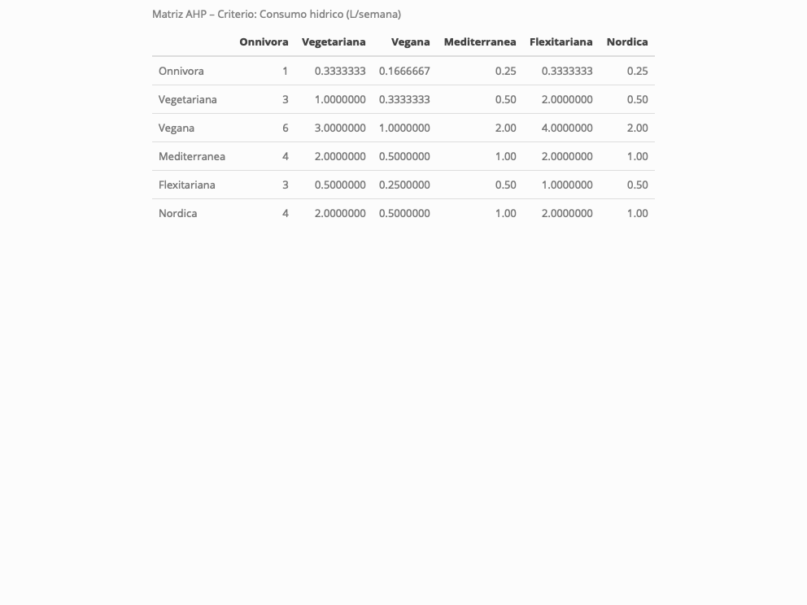
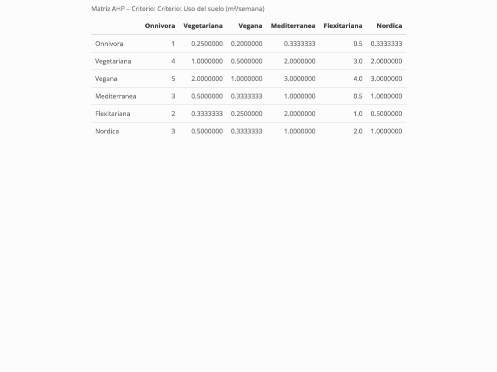
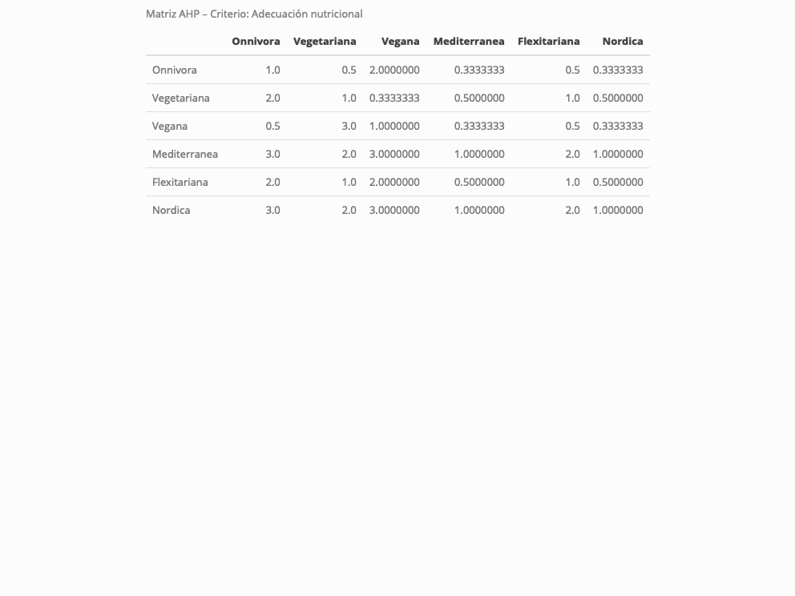
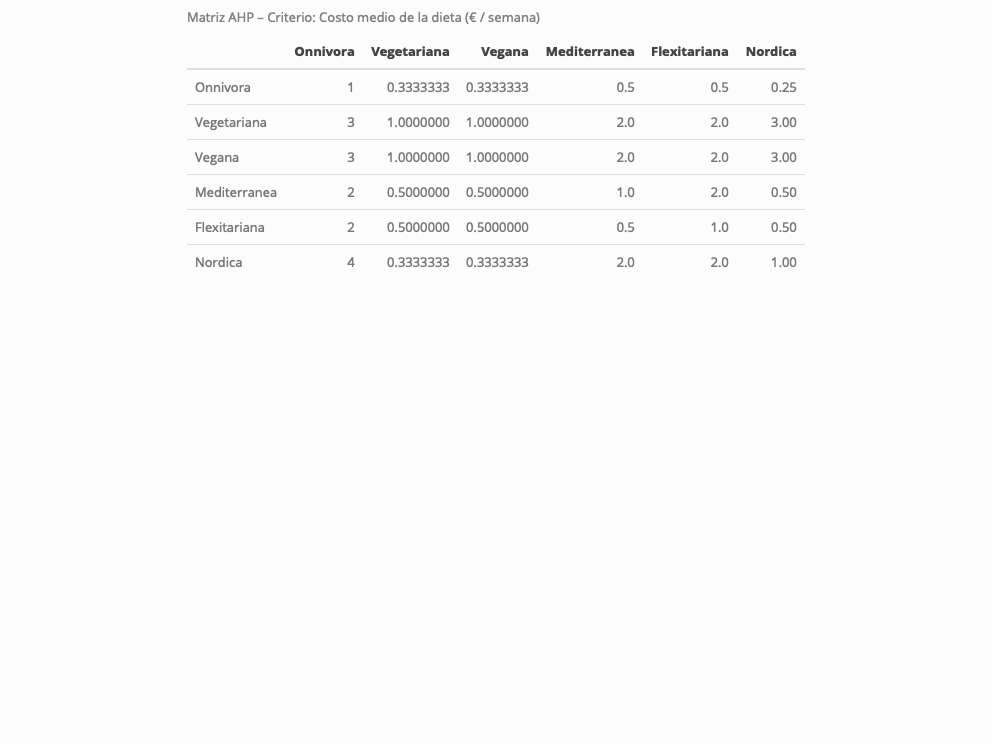

Elección de la mejor dieta – Métodos Multicriterio (AHP & PROMETHEE)
Autor/a
Bocciolone, Camilla
Fecha de publicación
2 de noviembre de 2025
Código
source("/Users/camillabocciolone/Documents/siviglia/teoria de la decision/TDecisionCodigo/teoriadecision_funciones_multicriterio.R")source("/Users/camillabocciolone/Documents/siviglia/teoria de la decision/TDecisionCodigo/teoriadecision_funciones_multicriterio_diagram.R")
Loading required package: shape
Código
source("/Users/camillabocciolone/Documents/siviglia/teoria de la decision/TDecisionCodigo/teoriadecision_funciones_multicriterio_utiles.R")# Paquetes usados en el documentolibrary(formattable)library(htmltools)library(knitr)library(qgraph)library(ahp)library(htmlwidgets)library(webshot)library(knitr)if (!webshot::is_phantomjs_installed()) { webshot::install_phantomjs()}
1 Introducción y motivación del problema
En los últimos años, la elección de una dieta adecuada se ha convertido en una de las decisiones personales más relevantes desde el punto de vista de la salud, el medio ambiente y la economía doméstica. La alimentación no solo determina el bienestar físico, sino también el impacto ecológico y el gasto económico de cada individuo o familia.
Según los informes de The Economist y Statista (2024), el número de personas que siguen una dieta vegetariana o vegana ha crecido más de un 60 % en Europa durante la última década. En España, se estima que el 13 % de la población se identifica como flexitariana, vegetariana o vegana, lo que refleja una creciente conciencia sobre los efectos de la alimentación en la salud y la sostenibilidad.
A nivel global, la Organización Mundial de la Salud (OMS) y la FAO promueven patrones alimentarios como la dieta mediterránea, reconocida por su equilibrio nutricional y bajo impacto ambiental. Sin embargo, la elección entre diferentes tipos de dieta —por ejemplo, mediterránea, vegetariana, vegana, keto o low-carb— implica considerar simultáneamente múltiples criterios conflictivos:
el coste económico (que se desea minimizar),
la salud y equilibrio nutricional (que se desea maximizar),
la facilidad de adherencia o cumplimiento,
la sostenibilidad ambiental, y
la variedad gastronómica y satisfacción personal.
Tomar una decisión óptima no es trivial, ya que ninguna alternativa domina completamente a las demás. Por ello, este trabajo aborda el problema como una decisión multicriterio, aplicando distintas metodologías vistas en clase:
AHP (Analytic Hierarchy Process) para establecer un ranking y determinar los pesos de los criterios a partir de comparaciones por pares,
PROMETHEE I para establecer un ranking parcial de alternativas
PROMETHEE II para establecer un ranking completo de alternativas, y
ELECTRE I para analizar la robustez de la elección mediante el estudio del núcleo y el umbral de concordancia α.
Con estos métodos se busca identificar la dieta más equilibrada desde un punto de vista integral, considerando aspectos nutricionales, económicos y ambientales. Además, el uso conjunto de diferentes técnicas permite comparar la coherencia de los resultados y comprender cómo cada enfoque gestiona la compensación entre criterios.
2 Planteamiento del problema
2.1 Criterios
2.1.1 Salud Cardiovascolar
Evalúa en qué medida cada dieta contribuye a reducir el riesgo de enfermedades cardiovasculares y a mejorar los factores de riesgo asociados, como el colesterol LDL, la presión arterial o la inflamación sistémica. Es un criterio de beneficio, a mayor puntuación, mejor salud cardiovascular.
Evidencia científica utilizada y supociones
Dieta omnívora: se toma como referencia; presenta mayor riesgo cardiovascular.
Dieta vegetariana / vegana: reducen el riesgo de cardiopatía isquémica en torno a un 25–30 % respecto a las dietas omnívoras, y mejoran los niveles de colesterol LDL (meta-análisis EPIC, Adventist Health Study, JAMA Netw Open 2023).
Dieta mediterránea: ampliamente documentada como protectora; el ensayo PREDIMED mostró una reducción de ≈30 % en la incidencia de eventos cardiovasculares.
Dieta flexitariana:supongo efecto intermedio; beneficios parciales al disminuir el consumo de carne y aumentar frutas y vegetales.
Dieta nórdica:supongo similar a la mediterránea por su contenido en cereales integrales, pescado y vegetales; aunque con menos estudios, se espera un beneficio ligeramente inferior
Valores
para la matrix de decision utilizada en Electre y Promethee
save_kable will have the best result with magick installed.
Código
knitr::include_graphics("Salud.png")

2.1.2 Riesgo de diabetes tipo 2
Evalúa la propensión a desarrollar diabetes tipo 2 (DM2) bajo cada patrón dietético. Es un criterio de costo, es decir, a menor puntuación, menor riesgo de diabetes.
Evidencia científica utilizada
Como fuente principal se empleó el Adventist Health Study-2 (AHS-2); sin embargo, no todas las dietas analizadas estaban representadas y algunos valores pueden diferir debido a diversos factores contextuales. Por ello, se tomaron ciertas suposiciones fundamentadas para completar la matriz de decisión.
Valores para la matrix de decision utilizada en Electre y Promethee
save_kable will have the best result with magick installed.
Código
knitr::include_graphics("matriz_dm2.png")

2.1.3 Emisiones de gases de efecto invernadero
Cuantifica el impacto climático de cada dieta como kg de CO₂ equivalente necesarios para producir los alimentos (p. ej., por semana para una dieta de ~2.000 kcal/día). Es un criterio de costo: menos emisiones ⇒ mejor.
Evidencia científica utilizada
Altroconsumo (2024, LCA de menús 2.000 kcal/día): Mediterránea ≈ 15,08 kg CO₂eq/semana, Vegetariana ≈ 10,88, Vegana ≈ 8,28. (www.altroconsumo.it)
Dietasomnívora suppongo la peor y con valor mas de 10 veces mas grande que mediterranea
dietas flexitariana supongo impacto intermedio entre la mediterránea y onnivora
Dieta nórdica: supongo impacto similar a la mediterránea
Valores
para la matrix de decision utilizada en Electre y Promethee
save_kable will have the best result with magick installed.
Código
knitr::include_graphics("Emisiones.png")

2.1.4 Consumo hídrico (huella de agua)
Mide el agua dulce utilizada a lo largo de la cadena alimentaria de la dieta (p. ej., litros de agua/semana para un menú de ~2.000 kcal/día). Es un criterio de beneficio: menos litros ⇒ mejor (menor presión sobre los recursos hídricos).
Indicadores posibles
Litros de COU (consumo de agua) por semana/día/año estimados con LCA de menús representativos.
Evidencia científica utilizada
Altroconsumo (2024, LCA de menús de 2.000 kcal/día): Mediterránea ≈ 1.880 L/semana, Vegetariana ≈ 1.980 L, Vegana ≈ 1.810 L. La vegetariana resulta la más “hidro-exigente” por el mayor uso de quesos/lácteos. (foodandtec.com)
El mayor uso de lácteos incrementa la huella hídrica
Faltan datos LCA comparables para Omnívora, Nórdica y Flexitariana: se asume Omnívora ≥ Mediterránea (más carne), Nórdica ≈ Mediterránea (pescado, integrales) y Flexitarianaintermedia entre Mediterránea y Vegetariana. Estas posiciones se usan para las comparaciones por pares.
Valores
para la matrix de decision utilizada en Electre y Promethee
Código
Water =c(2000,1980,1810,1880,1900,1850)names(Water) <-c("Onnivora", "Vegetariana", "Vegana", "Mediterranea", "Flexitariana", "Nordica")Water
save_kable will have the best result with magick installed.
Código
knitr::include_graphics("Consumohidrico.png")

2.1.5 Uso del suelo (huella territorial)
Representa la superficie agrícola necesaria para sostener una dieta determinada (m² de tierra productiva por persona y por semana o año). Es un criterio de costo, menos uso de suelo ⇒ mejor sostenibilidad territorial.
Indicadores posibles
m² de tierra agrícola/semana o por año estimados con análisis de ciclo de vida (LCA) de menús representativos.
Proporción de superficie dedicada a cultivos para piensos, pastos y productos animales (altamente determinante).
Evidencia científica utilizada
Altroconsumo (2024, análisis LCA de menús de 2.000 kcal/día): Mediterránea ≈ 18,84 m²/semana, Vegetariana ≈ 16,80 m², Vegana ≈ 15,24 m² → la mediterránea usa un ≈17 % más suelo que la vegana.
Onnívora: estimada mayor (más carne y lácteos → más tierra para piensos).
Flexitariana: intermedia, reducción notable frente a la omnívora .
Nórdica: similar a la mediterránea.
En ausencia de valores exactos para algunas dietas, se interpolan los datos a partir de LCA de Altroconsumo, manteniendo la jerarquía relativa entre las aternativas.
Valores
para la matrix de decision utilizada en Electre y Promethee
save_kable will have the best result with magick installed.
Código
knitr::include_graphics("Suelo.png")

2.1.6 Adecuación nutricional
Evalúa si la dieta aporta todos los nutrientes esenciales (proteínas de calidad, vitaminas, minerales, ácidos grasos esenciales, etc.) en cantidades cercanas o superiores a las recomendaciones. Es un criterio de beneficio: mayor adecuación ⇒ mejor.
Indicadores posibles
Índices compuestos como el Nutrient Adequacy Ratio (NAR) o Mean Adequacy Ratio (MAR).
Porcentaje de cumplimiento de las recomendaciones nutricionales (proteínas, calcio, hierro, zinc, vitaminas A, D, B12, C, folatos, etc.).
Puntuaciones de calidad dietética (p. ej., AHEI, Mediterranean Diet Score).
Evidencia científica utilizada
EPIC-Oxford (UK) y Adventist Health Study-2 (EE. UU.): ofrecen datos detallados de aportes medios de nutrientes según patrón dietético.
Valores tomados en parte desde Average Nutrient Intakes table 1 AHS-2 y en parte haciendo suppociciones
Valores
para la matrix de decision utilizada en Electre y Promethee
save_kable will have the best result with magick installed.
Código
knitr::include_graphics("Nutr.png")

2.1.7 Costo medio de la dieta
Evalúa el gasto monetario semanal o diario necesario para seguir cada patrón alimentario, manteniendo igual valor energético (~2.000 kcal/día) y adecuada cobertura nutricional. Es un criterio de costo, *: menor costo ⇒ mejor.
Evidencia científica utilizada
Altroconsumo (2024, análisis de precios en Italia):
Vegetariana: ≈ 53 €/semana → la más económica.
Vegana: ≈ 54 €/semana → similar a la vegetariana.
Mediterránea: ≈ 63 €/semana → ≈ 17 % más cara que la vegetariana (el 19 % del gasto es pescado y el 8 % carne).
Flexitariana: no aparece en Altroconsumo; se estima entre mediterránea y vegetariana
Omnívora estándar: prevista igual o algo más cara que la mediterránea .
Nórdica: se estima algo superior a la mediterránea.
Valores
para la matrix de decision utilizada en Electre y Promethee
save_kable will have the best result with magick installed.
Código
knitr::include_graphics("Costo.png")

2.1.8 Consumo de alimentos de origen animal (impacto en bienestar animal)
Mide la proporción y cantidad de productos animales (carne, pescado, lácteos, huevos) en cada dieta, indicador del número de animales criados o sacrificados y del impacto ético asociado. Es un criterio de costo ético-ambiental interpretado como criterio de costo: menor consumo animal ⇒ mejor (mayor bienestar animal y menor presión sobre la biodiversidad).
Indicadores posibles
% de calorías o proteínas de origen animal.
Porciones semanales o anuales de productos animales.
Evidencia científica utilizada
Filippin et al. (2023, IJERPH): comparación entre dietas mediterránea y vegana isocalóricas.
Mediterránea: ≈ 10,6 % de las calorías derivadas de alimentos animales (pescado, lácteos, ave).
Vegana: 0 %.
Suppongo
Omnívora occidental estándar: ≈ 25–30 % de las calorías totales de fuentes animales.
Vegetariana (lacto-ovo): ≈ 30–35 % de proteínas de origen animal (sin carne/pescado, pero con lácteos y huevos).
Flexitariana: consumo reducido (~50 % de la omnívora, o ≈ 12–15 % de las calorías).
Nórdica: similar a la mediterránea, con menos carne y más pescado .
Valores
Ante la ausencia de un dataset unificado, se emplean estas proporciones como base para Promethe y Electre
Emisiones Agua Suelo
0.5714286 0.2857143 0.1428571
Código
print(paste("consistencia:", resC2$consistencia))
[1] "consistencia: Consistencia aceptable"
suposición: Emisiones y Consumo de Agua son más importantes que Uso del Suelo (por impacto climático y hídrico).
3.1.2.3 ECONOMÍA Y ÉTICA (costo vs. bienestar)
Código
XmatrizC3 <-multicriterio.crea.matrizvaloraciones(t(c(1, 1/3, # Costo es menos importante que Animal3, 1)), 2, c("Costo","Animal"))resC3 <-multicriterio.metodoAHP.variante1.autovectormayorautovalor(XmatrizC3)resC3$valoraciones.ahp
Costo Animal
0.25 0.75
Código
# no consistencia porque 2x2
suposición: Bienestar animal es más importante que el costo económico.
# macro w_macro <- resNivel2$valoraciones.ahp # c("Salud","Ambiente","EconomiaEtica")# --- sub dentro ai macro ---w_salud <- resC1$valoraciones.ahp # c("SaludCV","Diabetes","Adecuacion")w_amb <- resC2$valoraciones.ahp # c("Emisiones","Agua","Suelo")w_econ <- resC3$valoraciones.ahp # c("Costo","Animal")# --- costruisco i pesi globali nell'ordine della tua lista ---w_criterios <-c("Salud Cardiovascular"= w_macro["Salud"] * w_salud["SaludCV"],"Riesgo de diabetes tipo 2"= w_macro["Salud"] * w_salud["Diabetes"],"Emisiones de GEI (CO2 eq.)"= w_macro["Ambiente"] * w_amb["Emisiones"],"Consumo hídrico (huella de agua)"= w_macro["Ambiente"] * w_amb["Agua"],"Uso del suelo (huella territorial)"= w_macro["Ambiente"] * w_amb["Suelo"],"Adecuación nutricional"= w_macro["Salud"] * w_salud["Adecuacion"],"Costo medio de la dieta"= w_macro["EconomiaEtica"] * w_econ["Costo"],"Consumo de alimentos de origen animal"= w_macro["EconomiaEtica"] * w_econ["Animal"])# normalizzo (sommatoria = 1) e mostrow_criterios <- w_criterios /sum(w_criterios)round(w_criterios, 3)
Salud Cardiovascular.Salud
0.301
Riesgo de diabetes tipo 2.Salud
0.172
Emisiones de GEI (CO2 eq.).Ambiente
0.170
Consumo hídrico (huella de agua).Ambiente
0.085
Uso del suelo (huella territorial).Ambiente
0.042
Adecuación nutricional.Salud
0.066
Costo medio de la dieta.EconomiaEtica
0.041
Consumo de alimentos de origen animal.EconomiaEtica
0.123
Código
# Orden de las alternativasalts <-c("Onnivora","Vegetariana","Vegana","Mediterranea","Flexitariana","Nordica")# Creo la matriz con los pesos locales de cada alternativa por criterioL <-cbind( pl1$valoraciones.ahp[alts], # Salud Cardiovascular pl2$valoraciones.ahp[alts], # Riesgo de diabetes tipo 2 pl3$valoraciones.ahp[alts], # Emisiones GEI pl4$valoraciones.ahp[alts], # Consumo hídrico pl5$valoraciones.ahp[alts], # Uso del suelo pl6$valoraciones.ahp[alts], # Adecuación nutricional pl7$valoraciones.ahp[alts], # Costo medio pl8$valoraciones.ahp[alts] # Consumo de alimentos de origen animal)colnames(L) <-names(w_criterios)rownames(L) <- alts# Calculo el puntaje AHP global de cada alternativa (producto matriz * pesos)scores_ahp <- L %*%as.numeric(w_criterios)names(scores_ahp) <-rownames(L) df_scores <-data.frame(Dieta =names(scores_ahp),PesoGlobal =round(as.numeric(scores_ahp), 4),check.names =FALSE)# ordeno de mejor a peordf_scores <- df_scores[order(df_scores$PesoGlobal, decreasing =TRUE), ]df_scores
Vegana (0.31) → valor más alto → mejor opción global, con un 31 % del peso total.
Vegetariana (0.21) → segunda, muy cercana.
Mediterránea (0.20) → tercera, competitiva.
Nórdica (0.14) → posición intermedia.
Flexitariana (0.09) y Omnívora (0.05) → opciones con menor rendimiento.
Interpretación: Las dietas Vegana, Vegetariana y Mediterránea son las mejor evaluadas globalmente.
3.2.2Contribución
3.2.2.1de los criterios principales
Salud (0.54) → criterio más influyente (≈ 54 % del peso total).
Ambiente (0.30) → segundo criterio más importante (≈ 30 %).
Economía/Ética (0.16) → menor peso relativo, pero aún relevante.
La decisión global está impulsada principalmente por la salud y la sostenibilidad ambiental, mientras que los aspectos económicos y éticos tienen un peso comparativamente menor.
3.2.2.2Subcriterios de Salud
SaludCV (0.30) y Diabetes (0.17) → contribuyen de forma dominante al bloque Salud.
→ Esto explica por qué la Mediterránea, aunque sobresale en adecuación nutricional, no lidera el ranking global: este criterio tiene poca influencia relativa. Las dietas Vegana y Vegetariana dominan porque maximizan la salud cardiovascular y reducen el riesgo de diabetes, criterios más valorados en el modelo.
3.2.2.3Subcriterios de Ambiente
Emisiones (0.17) → factor ambiental más relevante.
Agua (0.08) → importancia media.
Suelo (0.04) → impacto marginal.
→ Los pesos ambientales refuerzan la ventaja de la dieta Vegana frente a las demás alternativas. La dieta Vegana destaca nuevamente por su bajo impacto en emisiones y consumo hídrico.
3.2.2.4Subcriterios de Economía/Ética
Animal (0.12) domina dentro del bloque → la ética animal pesa mucho más que el Costo (0.04).
→ La dimensión ética penaliza a las dietas con alto consumo de productos animales, reforzando la preferencia por opciones plant-based. Las dietas Vegana y Vegetariana se ven favorecidas en esta dimensión.
3.2.3Conclusión general
El análisis AHP (tramite paquete y codigo R) evidencia que la dieta Vegana (31 %) es la alternativa globalmente más recomendable, seguida de la Vegetariana (21 %) y la Mediterránea (20 %).
Estas tres opciones mantienen ventajas combinadas en salud, sostenibilidad y ética, mientras que las dietas Flexitariana, Nórdica y Omnívora presentan un rendimiento global inferior.
La baja ponderación del criterio de adecuación nutricional explica por qué la Mediterránea no lidera, a pesar de su excelente equilibrio nutricional. Un ajuste de pesos que dé mayor relevancia a este aspecto podría modificar la jerarquía final.
3.3 AHP usando variante 3
Código
resNivel2 <-multicriterio.metodoAHP.variante3.basico(XmatrizNivel2)resC1 <-multicriterio.metodoAHP.variante3.basico(XmatrizC1)resC2 <-multicriterio.metodoAHP.variante3.basico(XmatrizC2)resC3 <-multicriterio.metodoAHP.variante3.basico(XmatrizC3)pl1 <-multicriterio.metodoAHP.variante3.basico(tb1)pl2 <-multicriterio.metodoAHP.variante3.basico(tb2)pl3 <-multicriterio.metodoAHP.variante3.basico(tb3)pl4 <-multicriterio.metodoAHP.variante3.basico(tb4)pl5 <-multicriterio.metodoAHP.variante3.basico(tb5)pl6 <-multicriterio.metodoAHP.variante3.basico(tb6)pl7 <-multicriterio.metodoAHP.variante3.basico(tb7)pl8 <-multicriterio.metodoAHP.variante3.basico(tb8)# macro w_macro <- resNivel2$valoraciones.ahp # c("Salud","Ambiente","EconomiaEtica")# --- sub dentro ai macro ---w_salud <- resC1$valoraciones.ahp # c("SaludCV","Diabetes","Adecuacion")w_amb <- resC2$valoraciones.ahp # c("Emisiones","Agua","Suelo")w_econ <- resC3$valoraciones.ahp # c("Costo","Animal")# --- costruisco i pesi globali nell'ordine della tua lista ---pesos_criterios <-c("Salud Cardiovascular"= w_macro["Salud"] * w_salud["SaludCV"],"Riesgo de diabetes tipo 2"= w_macro["Salud"] * w_salud["Diabetes"],"Emisiones de GEI (CO2 eq.)"= w_macro["Ambiente"] * w_amb["Emisiones"],"Consumo hídrico (huella de agua)"= w_macro["Ambiente"] * w_amb["Agua"],"Uso del suelo (huella territorial)"= w_macro["Ambiente"] * w_amb["Suelo"],"Adecuación nutricional"= w_macro["Salud"] * w_salud["Adecuacion"],"Costo medio de la dieta"= w_macro["EconomiaEtica"] * w_econ["Costo"],"Consumo de alimentos de origen animal"= w_macro["EconomiaEtica"] * w_econ["Animal"])# normalizzo (sommatoria = 1) e mostropesos_criterios <- pesos_criterios /sum(pesos_criterios)round(pesos_criterios, 3)
Salud Cardiovascular.Salud
0.300
Riesgo de diabetes tipo 2.Salud
0.173
Emisiones de GEI (CO2 eq.).Ambiente
0.170
Consumo hídrico (huella de agua).Ambiente
0.085
Uso del suelo (huella territorial).Ambiente
0.042
Adecuación nutricional.Salud
0.066
Costo medio de la dieta.EconomiaEtica
0.041
Consumo de alimentos de origen animal.EconomiaEtica
0.123
Código
# Orden de las alternativasalts <-c("Onnivora","Vegetariana","Vegana","Mediterranea","Flexitariana","Nordica")# Creo la matriz con los pesos locales de cada alternativa por criterioL <-cbind( pl1$valoraciones.ahp[alts], # Salud Cardiovascular pl2$valoraciones.ahp[alts], # Riesgo de diabetes tipo 2 pl3$valoraciones.ahp[alts], # Emisiones GEI pl4$valoraciones.ahp[alts], # Consumo hídrico pl5$valoraciones.ahp[alts], # Uso del suelo pl6$valoraciones.ahp[alts], # Adecuación nutricional pl7$valoraciones.ahp[alts], # Costo medio pl8$valoraciones.ahp[alts] # Consumo de alimentos de origen animal)colnames(L) <-names(pesos_criterios)rownames(L) <- alts# Calculo el puntaje AHP global de cada alternativa (producto matriz * pesos)scores_ahp <- L %*%as.numeric(pesos_criterios)names(scores_ahp) <-rownames(L) df_scores <-data.frame(Dieta =names(scores_ahp),PesoGlobal =round(as.numeric(scores_ahp), 4),check.names =FALSE)# ordeno de mejor a peordf_scores <- df_scores[order(df_scores$PesoGlobal, decreasing =TRUE), ]df_scores
Resulta el mismo ranking producido en AHP con autovalor. Solo cambian lo pesos
3.4 Analysis de l’inconsistencia
Los coeficientes de inconsistencia obtenidos para todas las matrices de comparación son inferiores al 10%, tanto en el cálculo realizado mediante el método del autovector principal como utilizando el paquete ahp. Esto indica que los juicios emitidos en los distintos niveles del modelo son altamente coherentes y no presentan contradicciones lógicas significativas entre las preferencias establecidas.
3.5 Conclusion de ahp
Tenemos un orden final de preferencia que es: Vegana >> Vegetariana > Mediterránea > Nórdica > Flexitariana > Omnívora.
4 Electre
Se aplicó el método ELECTRE I empleando la matriz de decisión normalizada (nadir) y los pesos globales derivados del modelo AHP.
El procedimiento ha incluido el cálculo de las matrices de concordancia y discordancia, la aplicación de los umbrales de veto y la obtención del núcleo aproximado.
Salud Cardiovascular.Salud
0.30133401
Riesgo de diabetes tipo 2.Salud
0.17247067
Emisiones de GEI (CO2 eq.).Ambiente
0.16969219
Consumo hídrico (huella de agua).Ambiente
0.08484609
Uso del suelo (huella territorial).Ambiente
0.04242305
Adecuación nutricional.Salud
0.06580988
Costo medio de la dieta.EconomiaEtica
0.04085603
Consumo de alimentos de origen animal.EconomiaEtica
0.12256809
save_kable will have the best result with magick installed.
4.2 vetos más permisivos
Código
sal_E <-multicriterio.metodoELECTRE_I( tb_dietas,pesos.criterios = pesos,nivel.concordancia.minimo.alpha =0.5, #por cada alfa in (0.5,0.85)no.se.compensan =c(0.4, 0.35, Inf, Inf, Inf, Inf, Inf, Inf),que.alternativas =TRUE)qgraph::qgraph(sal_E$relacion.dominante)
Código
sal_E$nucleo_aprox
Vegana
3
4.3 Conclusión de ELECTRE
Al aplicar el método ELECTRE I con los pesos globales procedentes del modelo AHP y la matriz de decisión normalizada (homogeneización nadir), se observa una gran concordancia con el ranking obtenido mediante AHP.
Con un nivel de concordancia α ∈ (0.50, 0.87) y umbrales de veto moderados
[(0.25, 0.30, 0.35, ∞, ∞, 0.25, ∞, 0.40)],
el núcleo aproximado está formado por las dietas Vegetariana, Vegana y Mediterránea, lo que indica que estas alternativas no son sobreclasificadas por el resto bajo condiciones de veto prudentes. Mientras con α > 0.87 la dieta Nordica entra en el nucleo.
Al relajar los vetos en los criterios ambientales y de adecuación nutricional
[(0.40, 0.35, ∞, ∞, ∞, 0.90, ∞, ∞)],
aparecen más relaciones de sobreclasificación en el grafo de dominancia; en consecuencia, el núcleo se reduce a las dietas Vegana y Mediterránea con α <= 0.87 y desde α = 0.88 la Nordica entra en el nucleo.
Finalmente, con α ∈ (0.50, 0.80) y vetos aún más permisivos
[(0.40, 0.35, ∞, ∞, ∞, ∞, ∞, ∞)],
la alternativa Vegana queda como único elemento del núcleo, es decir, no es sobreclasificada por ninguna otra.
En esta última configuración, al eliminar el veto sobre la adecuación nutricional, la Mediterránea deja de estar protegida frente a las dietas con menor adecuación, y por tanto sale del núcleo, mientras que la Vegana mantiene su posición dominante.
En suma, ELECTRE I corrobora la robustez del resultado del modelo AHP: la dieta Vegana emerge como la opción más sólida en términos globales, mientras que la Mediterránea permanece como una alternativa fuertemente competitiva, especialmente por su equilibrio entre salud, sostenibilidad y adecuación nutricional.
5 Promethee
5.1 PROMETHE I
Código
# Matriz de funciones de preferencia: tipo, q, p, stab.fpref <-matrix(c(3,0,1,0,3,0,0.75,0,5,0.1,1,0,3,0,1,0,3,0,1,0,6,0,1,0.1,3,0,1,0,3,0,1,0),ncol =4, byrow =TRUE)tab.fpref
Onnívora no supera a ninguna otra dieta. → Es la opción con menor rendimiento global.
Vegetariana supera a: → Onnívora, Flexitariana y Nórdica. No supera a Vegana ni a Mediterránea.
Vegana supera a: → Onnívora, Vegetariana, Mediterránea, Flexitariana y Nórdica. → Es la alternativa que supera a todas las demás, sin ser superada por ninguna en conjunto.
Mediterránea supera a: → Onnívora, Flexitariana y Nórdica. No supera a Vegetariana ni a Vegana.
Flexitariana supera solo a: → Onnívora. En todos los demás casos es superada.
Nórdica supera a: → Onnívora y Flexitariana. En general queda en una posición intermedia.
5.1.2 Conclusión
La dieta Vegana es la alternativa dominante en el método PROMETHEE I, pues supera a todas las demás. Le siguen, en rendimiento global, las dietas Mediterránea y Vegetariana, que también presentan varias relaciones de dominancia positiva. Las dietas Flexitariana, Nórdica y especialmente la Onnívora muestran menor capacidad de superación, situándose en los niveles inferiores del ranking.
Tenemos entonces el siguiente ranking de las dietas según el flujo neto obtenido con PROMETHEE II:
Posición
Alternativa
Descripción breve
🥇 1
Vegana (3)
Mayor flujo neto ⇒ opción globalmente preferida
🥈 2
Mediterránea (4)
Muy cercana, segunda mejor
🥉 3
Vegetariana (2)
Buen equilibrio, pero dominada parcialmente
4
Nórdica (6)
Rendimiento medio, cercana a las mejores en algunos criterios
5
Flexitariana (5)
Intermedia, pero con menos dominancia
6
Onnívora (1)
Peor desempeño global
5.2.1 Interpretación
El ranking de PROMETHEE II confirma los resultados de ELECTRE y AHP: la dieta Vegana obtiene el mayor flujo neto positivo, situándose como la alternativa globalmente más preferida. La dieta Mediterránea ocupa la segunda posición, seguida de la Vegetariana, que también presenta un buen equilibrio entre salud y sostenibilidad. Las dietas Nórdica y Flexitariana se mantienen en posiciones intermedias, mientras que la Omnívora resulta la menos favorable desde el punto de vista multicriterio.
5.3 Promethee media I
Código
# Matriz de funciones de preferencia: tipo, q, p, stab.fpref <-matrix(c(3,0,1,0,3,0,0.75,0,5,0.1,1,0,3,0,1,0,3,0,1,0,6,0,1,0.1,3,0,1,0,3,0,1,0),ncol =4, byrow =TRUE)tab.fpref
A pesar de que los valores de los flujos de preferencia difieren ligeramente entre la implementación en R y el software PROMETHEE Windows, el orden de las alternativas se mantiene idéntico.
Estas pequeñas discrepancias se deben exclusivamente a diferencias en la normalización de los flujos
Por tanto, los resultados son coherentes y comparables, confirmando la robustez del ranking obtenido.
6 Conclusión general del análisis multicriterio
Los tres métodos (AHP, ELECTRE y PROMETHEE) coinciden en destacar a las dietas Vegana, Vegetariana y Mediterránea como las mejores alternativas, reflejando un rendimiento equilibrado en la mayoría de los criterios evaluados (salud, sostenibilidad y ética).
La Vegana sobresale de manera consistente en todos los métodos, mientras que la Mediterránea y la Vegetariana muestran fortalezas particulares y se sitúan muy próximas en el ranking.
La explicación principal de este resultado es que estas tres dietas obtienen valores superiores en casi todos los criterios considerados, con la excepción del criterio de adecuación nutricional, donde destacan la Mediterránea y la Nórdica.
De hecho, en ELECTRE se observó que al incluir un veto sobre la adecuación nutricional, la Mediterránea entraba en el núcleo (y con alpha mas alto tambien la Nordica), superando a la Vegetariana, lo que resalta su robustez en ese aspecto.
En conclusión, con los pesos y los criterios definidos, la Vegana resulta la alternativa más favorable, aunque la Vegetariana y la Mediterránea siguen siendo opciones de alto rendimiento y coherentes con objetivos de salud y sostenibilidad.
6.1 Reflexiones finales
Este estudio tiene un carácter exploratorio y limitado, ya que se ha basado parcialmente en suposiciones y estimaciones de algunos datos, y los criterios utilizados son en gran medida subjetivos.
El peso asignado a cada criterio refleja una perspectiva personal, en la que se ha priorizado la la ética y por la salud particularmente los riesgos de cáncer y enfermedades cardiovasculares, por lo que la adecuación nutricional recibió un peso relativamente bajo.
Sin embargo, para otros enfoques o perfiles de decisión, la adecuación nutricional o incluso el costo podrían tener una importancia mucho mayor, lo que modificaría significativamente el ranking final y podría otorgar una ventaja adicional a dietas como la Mediterránea, Nordica o la Flexitariana.
En definitiva, se trata de un estudio parcial pero ilustrativo, que permite visualizar cómo las distintas metodologías multicriterio pueden apoyar la toma de decisiones en temas complejos como la alimentación sostenible, sin pretender ofrecer una “respuesta final” sino una base estructurada para el análisis comparativo.